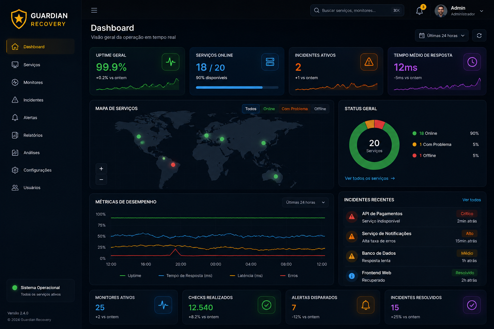

Sistemas fora do ar podem causar prejuízos críticos.
Empresas precisam detectar falhas rapidamente, monitorar disponibilidade e responder incidentes antes que afetem usuários e operações.
Plataforma enterprise para monitoramento de serviços, detecção de falhas, abertura automática de incidentes e recuperação operacional em tempo real.

Empresas precisam detectar falhas rapidamente, monitorar disponibilidade e responder incidentes antes que afetem usuários e operações.
O Guardian Recovery monitora serviços em tempo real, executa health checks, mede tempo de resposta e gera incidentes automaticamente.
Backend enterprise orientado a performance, estabilidade e escalabilidade.
APIs REST para monitoramento, incidentes e gerenciamento de serviços.
Autenticação segura para controle administrativo e APIs protegidas.
Persistência de incidentes, logs e métricas de monitoramento.
Verificação contínua de disponibilidade e status dos serviços monitorados.
Criação automática de incidentes quando serviços ficam offline.
Response time, uptime, disponibilidade e monitoramento operacional.
O Guardian Recovery demonstra domínio em backend Java, arquitetura REST, monitoramento, incident response e sistemas corporativos de alta disponibilidade.
O projeto foi desenvolvido com foco em escalabilidade, observabilidade e monitoramento contínuo, seguindo conceitos utilizados por plataformas SaaS modernas.